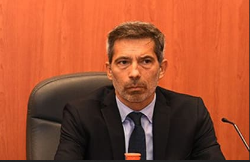
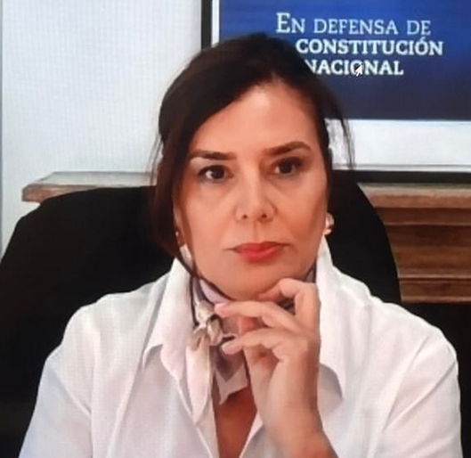
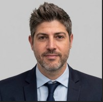
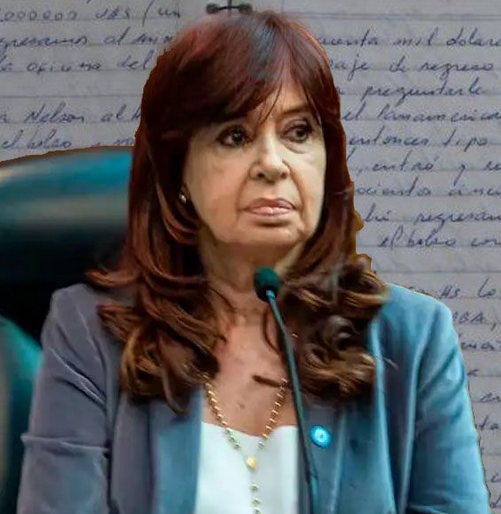
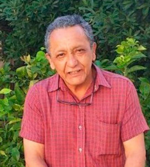
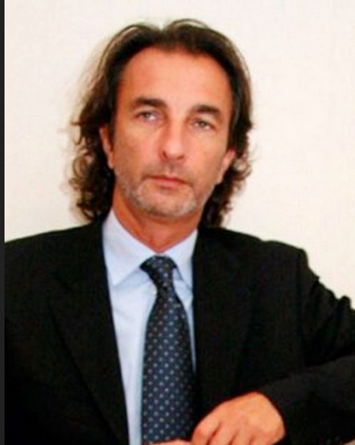
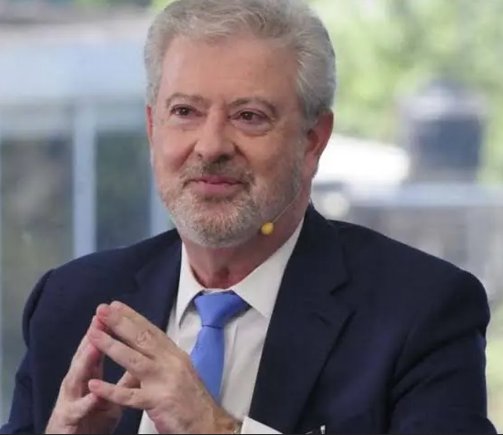

EXPTE. 9608/2018 Y ACUMULADOS — TOF N.° 7, COMODORO PY — EN TRÁMITE
Cuadernos de las coimas
Un expediente de protagonistas del mayor juicio de corrupción de la historia argentina: quién acusa, quién juzga, quién está imputado y qué sostiene cada parte. Actualizado al 18 de agosto de 2026.
86Imputados
25Arrepentidos
2003–15Período investigado
899Testigos citados
SIN SENTENCIA FIRME
Este juicio está en trámite, sin sentencia. Todo lo que sigue —acusaciones, roles, montos— es lo que sostienen las partes: la fiscalía, la querella (UIF) y los testimonios de imputados colaboradores ("arrepentidos"), cuya validez están debatiendo las defensas en el propio juicio. Rige la presunción de inocencia para todas las personas imputadas hasta que exista condena firme.
El Tribunal
TOF N.° 7 — Comodoro Py
Los jueces a cargo de conducir el debate, resolver los planteos de las partes y, eventualmente, dictar veredicto.

Enrique Méndez Signori
Presidente del tribunal
Conduce las audiencias, fija el cronograma y anunció el régimen de dos audiencias semanales para agilizar el debate. Fue quien confirmó la fecha de indagatoria presencial de Cristina Kirchner.
Sostiene la acusación en el debate oral. La instrucción previa —siete años de investigación— estuvo a cargo de otro fiscal, hoy sin intervención en la etapa de debate.

Fabiana León
Fiscal general — acusadora en el debate
Titular de la Fiscalía General N.° 5 ante los TOF. Definió la causa como "la investigación de corrupción más extensa de la historia judicial argentina". Rechazó los ofrecimientos de "reparación integral" de empresarios que buscaban evitar el juicio, sosteniendo que aceptarlos implicaría "tarifar la impunidad".
Llevó adelante la investigación desde 2018 junto al fallecido juez Claudio Bonadio, y formuló los sucesivos requerimientos de elevación a juicio. Ya no interviene en el debate oral.
Integra el equipo de la Fiscalía General N.° 5 que acompaña a León en el debate. Ficha en construcción — falta cobertura periodística específica sobre su rol.
Guido Ambrosio y Claudio Nimis
Auxiliares fiscales
Completan el equipo del Ministerio Público Fiscal en las audiencias. Ficha compartida — falta cobertura individual.
La Querella
Unidad de Información Financiera (UIF)
El organismo antilavado del Estado se constituyó como parte querellante. Su legitimidad para intervenir fue cuestionada varias veces por las defensas, pero el tribunal la ratificó en todas las instancias.

Mariano Galpern
Abogado — director de litigios penales, UIF
Representa a la UIF en cada audiencia. Calificó a Cristina Kirchner como "la jefa de la asociación ilícita" en su alegato de apertura y sostuvo, ante los planteos de nulidad de las defensas, que "no existe ninguna nulidad que invalide este proceso".
Los cuatro nombres que sostienen el eje político de la acusación: la hipótesis fiscal sostiene que existió una asociación ilícita comandada desde el Ministerio de Planificación Federal.

Cristina Fernández de Kirchner
Principal acusada
Expresidenta. Imputada como presunta jefa de la asociación ilícita y por 204 hechos de cohecho pasivo. Declaró de manera presencial el 17 de marzo de 2026 durante 45 minutos, sin responder preguntas: cuestionó a los jueces y fiscales y advirtió que podría "morir presa". Cumple prisión domiciliaria por la causa Vialidad (otro expediente). Su defensor es Carlos Beraldi.
Según la acusación, coordinaba el esquema desde su ministerio. Detenido en Ezeiza. Se negó a declarar en su indagatoria del 17 de marzo de 2026 — Baratta tomó la palabra inmediatamente después de esa negativa.
Nexo operativo del esquema: jefe directo de Oscar Centeno. A diferencia de De Vido, sí declaró — extensamente y en varias ampliaciones — tildando a Centeno de "mentiroso" y cuestionando a los arrepentidos, a quienes calificó de "apretados" y "extorsionados". Chocó públicamente con el testigo Roberto Lavagna, a quien llamó "hipócrita".
El "hombre de los bolsos". Primer exfuncionario en pedir la figura de arrepentido, en 2018. En su declaración del 30 de abril de 2026 se retractó parcialmente: dijo que "si me hubiera encontrado en otra situación anímica y de salud" no habría declarado como arrepentido, y sostuvo que "nunca integré una asociación ilícita". A partir de su testimonio, el tribunal restringió la transmisión pública del juicio.
Toda la causa se apoya en dos fuentes: el registro manuscrito de un chofer y la confesión de un financista. Ambos, durante el juicio oral, se acogieron a su derecho a no responder preguntas de las partes.

Oscar Centeno
Exchofer — autor de los cuadernos
Chofer de Roberto Baratta. Durante años anotó en ocho cuadernos manuscritos los traslados de dinero entre empresarios y funcionarios. Los dejó a resguardo de un expolicía conocido, Jorge Bacigalupo, quien se los hizo llegar al periodista Diego Cabot en 2018. Una pericia caligráfica confirmó que es el autor. Ratificó vía Zoom ser el autor de las anotaciones, pero durante el juicio oral no respondió preguntas.
Señalado como el principal recaudador y "cambista": recibía el dinero de las empresas, lo convertía a dólares y se lo entregaba a José López. Describió el funcionamiento interno de "La Camarita" en su confesión de 2018 ante Bonadio y Stornelli. También vinculado a la financiera de Lázaro Báez. No respondió preguntas durante el juicio oral.
De 65 imputados, los de mayor peso narrativo e institucional
Ordenados por relevancia para seguir el juicio, no alfabéticamente. El resto de los 65 empresarios imputados figura en el informe completo de actores.

Ángelo Calcaterra
IECSA
Primo de Mauricio Macri. Se quebró en agosto de 2018 con una confesión detallada de fuerte impacto simbólico. Como arrepentido, durante el juicio oral se negó a declarar y a responder preguntas — al igual que su mano derecha en la empresa, Javier Sánchez Caballero.
Relató que De Vido lo citó en 2004 para exigirle "garantizar el éxito" de licitaciones a favor del gobierno, y que la obra pública iba a ser "uno de los métodos de recaudación" política. Uno de los testimonios más citados para explicar el mecanismo desde adentro.
Relató haber sufrido "aprietes" durante el kirchnerismo: según su testimonio, De Vido le dijo que "no se puede hacer política sin plata". Durante el juicio oral se negó a declarar. Una pericia de ARCA (exAFIP) ratificó retiros en efectivo de más de USD 2 millones en su grupo empresario entre 2008 y 2009.
A diferencia de otros empresarios imputados, rechazó haber entregado dinero a Uberti o Clarens, y reclamó —sin éxito— un careo con quienes lo señalan en el expediente.
El tribunal lo sobreseyó en 2025 tras un informe del Cuerpo Médico Forense que concluyó que presentaba una incapacidad para comprender el proceso. Ya no es parte activa del juicio, pero se mantiene en esta ficha por el peso de su empresa en la acusación.
Su empresa está vinculada al primer pago relatado por la acusación: USD 1,5 millones recolectados por Baratta y Lazarte. Durante la instrucción, sus defensores denunciaron que Bonadio y Stornelli lo hicieron desfilar con casco y chaleco antibalas para intimidarlo. Se negó a declarar en el juicio oral.
Son 88 abogados en total, uno de los rasgos que explica la lentitud del proceso. Estos cuatro representan a los imputados de mayor peso en la causa. Todos coinciden en un eje común: cuestionar la validez de las confesiones de los arrepentidos y denunciar coacciones durante la instrucción de Bonadio y Stornelli.

Carlos Beraldi
Defensor de Cristina Fernández de Kirchner
Junto con Ary Llernovoy, es el abogado más visible del juicio. Pidió formalmente la nulidad de todo el proceso, denunciando "forum shopping" y una "estafa de los arrepentidos". Reclamó, sin éxito, que Centeno declarara en persona para poder contrainterrogarlo. Presentó ante el tribunal una recopilación de casi 30 relatos de presuntos aprietes durante la instrucción.
Junto con Gabriel Palmeiro, pidió la nulidad de todo lo actuado y la suspensión del juicio hasta incorporar pruebas pendientes. Sostiene que la imposibilidad de contrainterrogar a los arrepentidos que guardan silencio "vulnera el derecho a defensa".
Exministra de las Mujeres, Géneros y Diversidad de la Nación (2019–2023). Junto con Marcos Aldazabal, defiende a Baratta y presentó una denuncia penal contra Oscar Centeno. Interrogó extensamente al periodista Diego Cabot y al exfuncionario vial Javier Iguacel durante el juicio.
Una de las voces más combativas del juicio. Fue blanco de una maniobra de espionaje del falso abogado Marcelo D'Alessio, orquestada —según denunció— a pedido del propio fiscal Stornelli. En el juicio cuestionó abiertamente la utilidad de la ley del arrepentido: "¿para qué la necesitamos?", interpeló.
Declaraciones e indagatorias — transmitidas públicamente
La primera audiencia contiene la lectura íntegra de la acusación contra los 86 imputados (~5 hs). Las demás son las indagatorias de protagonistas específicos, tal como se transmitieron por YouTube.
Apertura del juicio — 6 nov. 2025
Lectura íntegra de la acusación contra los 86 imputados
~5 horas. El documento audiovisual más completo: contiene los cargos formales contra cada acusado.
Cristina Fernández de Kirchner — 17 mar. 2026
Indagatoria presencial en el TOF 7
45 minutos. No respondió preguntas del tribunal ni de las partes.
José López — 30 abr. 2026
Declaración y retractación parcial como arrepentido
El testimonio que, según la cobertura, "más complicó" a Cristina Kirchner — con matices sobre el estado en que firmó su confesión original.
Diego Cabot (periodista) — mayo 2026
Testimonio sobre el origen de los cuadernos
El periodista que recibió los cuadernos originales de un conocido de Centeno en 2018 relató cómo llegaron a la Justicia.
Roberto Baratta — cobertura de audiencia
Chats y videos inéditos con De Vido y Kirchner
Material exhibido en el juicio sobre comunicaciones entre los principales imputados de la cúpula política.
Sobre el silencio en el juicio: Oscar Centeno, Ernesto Clarens, Ángelo Calcaterra y Aldo Roggio —cuatro de los testimonios más determinantes para la acusación— se acogieron a su derecho a no responder preguntas durante el debate oral. No hay video de su indagatoria en este juicio: su prueba principal son las confesiones de 2018, incorporadas por secretaría, no repetidas ante cámara.